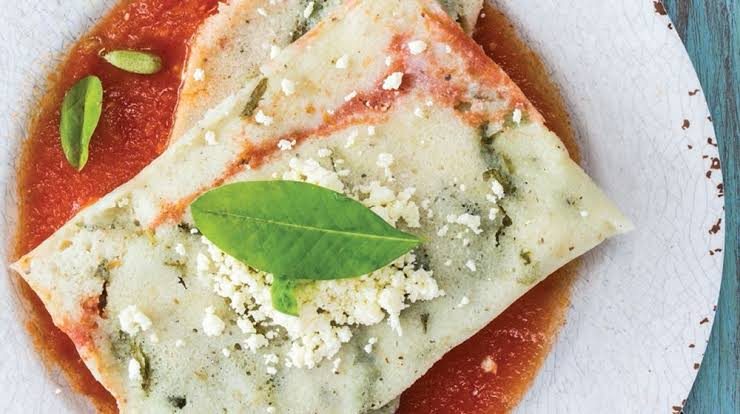

La gastronomía del Día de Muertos es una de las expresiones culturales más ricas del país, combinando ingredientes prehispánicos con técnicas coloniales para honrar a las ánimas que regresan. Cada región aporta platillos y sabores particulares al altar de muertos.
El Tamal de Chipilín: Joya Gastronómica de Chiapas
El tamal de chipilín es un pilar de la cocina ritual del sur de México, con especial arraigo en Chiapas, Tabasco y la región del Istmo de Tehuantepec en Oaxaca. Su ingrediente estrella es el chipilín (Crotalaria longirostrata), una planta de hojas verdes silvestres de sabor penetrante, aromático y ligeramente amargo que aporta una identidad única a la masa.
